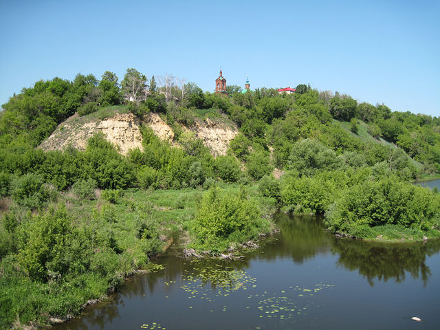
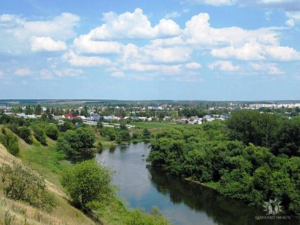

Смоляков
Алексей Алексеевич
Доля
…Так по сообщению лебедянского воеводы Ивана
Скорнякова-Писарева,в августе 1632 года татары в количестве
тысячи человек,разделившись на несколько отрядов,со всех сторон
приступили к посаду.Завязался жаркий бой,затянувшийся до
вечерни.С напряжением всех сил лебедянцы одолели врага,
«воинских людей татар от посада отбили и слобод жечь не дали…»

Действующие лица: Воевода; жена воеводы; их дочь Марина; купец ;
кузнец Влас; старец Филарет
Воевода: Да, неважные дела
Сообщили мне с утра
Землепашцы из крестьян
Татарва разбила стан.
Худо дело,дело дрянь
Окружили Лебедянь.
Басурман черным-черно
Аль тебе то всё равно?
Что молчишь,нахмуря лоб?
Ты ж в округе знатный жлоб.
Купец: Хоть и жалко мне добра
Да платить видать пора
Соберу большую дань
Пусть обходят Лебедянь.
Воевода: Кто обходит?
Купец: Татарва
Воевода: Эта песня не нова
Слушай ты,ядрёна вошь,
Хоть в торговле ты хорош
Да бездушная балда
Русь разорена до тла.
Здесь построен был форт-пост
Чтобы пользу он принёс.
Ты ж крестился, окаянный
Православным вроде стал.
А по сути басурманом
Быть совсем не перестал.
Купец: Мне неможно воевать
Надо где-то переждать
Нагадал мне старый дед
Проживу я тыщу лет.
А в двухтысячном году
На престол гляди взойду.
Воевода: Это что за дед таков
Кто морочит дураков?
Проживёшь ты тыщу лет?
Передай тады привет
Прямо ноне, скрозь века
От воеводы Скорняка
Тому, кто будет теми днями
Воеводить в Лебедяни.
Передай ему,смоги
Лебедянь убереги
Нонче нам за неё драться
Вот такие пироги.
Чтоб потом не говорили
Не судили чья вина
Басурман мол победили
А порядка не хрена.
Ну,давай,мой привет передавай.
Купец: (встаёт,кланяется в зал)
От воеводы Скорнякова привет Ишутину,
И Копылову!
Воевода: Вот затейник,фантазёр
Хоть и молод-да хитёр.
Марш отседова в посад.
И ни шагу чтоб назад.
Собирай немедля рать
Да злодеев воевать.
(вслед уходящему купцу)
Влас,кузнец наш,ноне где?
Купец: Знамо где. На кузнецкой слободе.
Жеребца куёт Арине.
Мать:Вот он, лёгок на помине.
(входит Влас)
Воевода:Заходи,кузнец наш, Влас
Приглашён ты не на квас.
Влас: Здоров будь наш воевода.
Да.Слыхал я от народа.
Басурманам дадим бой.
Знай.Народ всегда с тобой.
Воевода: Наперёд чем воевать
Надо будет всё узнать.
Где проклятый враг засел?
Сколько душ и сколько стрел?
Подбирай себе отряд
Из отчаянных ребят.
Возле Дона,у воды
Потайные есть ходы.
Вот шагайте вы к нему
Начинайте кутерьму.
(входит купец)
Купец:Про ходы давно я знал
Старый дед мне показал.
Я по ним ещё ребёнком
Допозна всегда блукал.
Если надо подскажу
Добру службу сослужу.
Воевода:Ты ж брехал что не воюешь?
Купец: Это так.Для куражу.
Марина:Влас,возьми вина с собой
Для сугрева под землёй.
Влас:Рано пить вино,Маринка
Если здеся непокой.
Воевода: Всё увидеть, разузнать
Где татарин вздумал стать.
Влас! Все сведенья добуть!
Всё ребята, в добрый путь.
(Влас и купец уходят)
Мать: К тебе старец Филарет.
Пропущать его,аль нет?
Воевода: Пропусти мне Филарета
Он мне нужен для совета.
(входит Филарет,крестится)
Воевода: Здравствуй,старец Филарет.
Ты прожил немало лет.
Изложи мне ноне план
Одолеть как басурман.
Филарет: План нужён,но в нём ли дело.
Надо чтоб душа горела.
По церквам звони набат
Люди сами станут в ряд.
Под священным под крестом
В бой пойдут как за отцом.
Да и сам,смотри,не трусь
Жизнь отдать за нашу Русь.
Это с нашим-то народом
Душой чистым от природы
Да не сладить басурман?
Всё понял?А ты мне-план.
(Филарет крестит воеводу)
Вот за сим готовься к бою.
Буду рядом я с тобою.
Я всю жизнь их сокрушал
Ни раза не оплашал.
Может меч не удержу
Но где надо подскажу.
(уходит)
Мать: Влас вернулся из дозору
Еле тащит ноги в гору.
(входит Влас.Ноги разбиты.)
Воевода: Влас!Живой?
А где отряд?
Влас: Потерял я всех ребят.
Сам пока ещё живой.
Пусть без ног,да с головой.
Воевода: Знать сумеешь говорить
Что сумел ты раздобыть.
Влас: Басурман примерно тыща.
Словно волки всюду рыщат.
Стоят почти рядом
В несколько отрядов.
Вот рисунок на холсте (достаёт холст)
Как стоят они в версте.
Завтра к полудню пойдут
На Слободку и вот тут.
(показывает)
Воевода: Слушай мой приказ другой
А затем иди домой.
Бабка ноги перевяжет
Чем-нибудь пущай помажет.
В ночь людей из слободы
Кто больны или худы
Переправить к нам сюда б
Не забудь детей и баб.
Влас: Всё исполню как велел
Не уйду от нужных дел.
Марина:Влас, ты что ли задержался б
Отдохнул бы да поел.
Влас:Как покончим с ворожьём
Наедимся и попьём.
Будем слушать соловья
С тобой любушка моя.
(Влас уходит.)
Воевода:Ты куда смотрела, мать?
Ты с ним любишься,Маринка.?
Мать:Будя к девке приставать.
Воевода: Жена,год смотри какой.
Жена:(удивлённо) Тыща шесот тридцать второй.
Воевода: Я не то имел в виду
Всё сложилось на беду.
Засуха,неурожай,
Да болезни через край
Сгибло всё в пожаре
А теперь-татаре.
Жена: Да,тяжёлы времена
Чаша выпита до дна.
Вот с иконою святой
Отправляю тебя в бой.
(подаёт икону)
Воевода: Эх, Рассея,наша Русь!
За тебя хоть разорвусь!
Вот какая ДОЛЯ
Натерпелись горя.
За детей,жену и мать
Уж пора и в морду дать.
Не отступим мы не шагу
Насмерть будем все стоять.
(Все уходят.Пауза.Медленно выходит жена воеводы)
Жена: Длился бой тот до заката
Не вернулись мужья в хаты.
Лежат в поле сыновья
(выходят все)
Влас: Прощай любушка моя
Не бродить нам на вечере
И не слушать соловья.
Не увидеть больше бега
Ласковой донской волны.
Не потреплет кудри ветер
Лебедянской стороны.
Воевода: А татар мы победили
На Руси теперь покой
Лебедянцы не забыли
Завещал что князь Донской.
27.07.2010г
Доля-2
Прошло три года как одолели татар.Лебедянцы занимались мирным
трудом.Так в труде и отдыхе,буднях и праздниках,радостях и
горестях проходили день за днём,ночь за ночью.Случилось и горе
горькое,которое тоже надо уметь пережить…

(трагикомедия)
Действующие лица: Воевода, жена воеводы, их дочь Марина, батрак
Илья, купец Серёжа,старец Филарет
Действие 1
Воевода
Что за странные дела?
Это где же ты была?
Где ты шлялась эту ночь?
Ты же воеводы дочь!
Марина
Не терзай мне тятя душу
Я люблю,люблю Илюшу.
С ним была я до рассвета
Что,убьёшь теперь за это?
Воевода
Это что же?Это как?
Он же у меня батрак.
Твой жених купец Серёжа
Не красивая пусть рожа
Но зато кошель из кожи
Весь набитый серебром.
Твоё счастье только в нём.
Ростовщик хоть и меняла
Обманул людей немало
Да большой,красивый дом
И сундук набит добром.
Марина
Никогда его не буду
Слышишь,тятя,никогда.
Никогда теперь не струшу
И не брошу я Илюшу.
Мать
Ты молчишь что,Филарет
Извелася наша девка
Ей же скоро двадцать лет.
Филарет
Чтобы речи говорить
Надо стопочку испить
Самогону мне налей
Чтобы чувствовать бодрей.
Воевода
Патриот я Лебедяни
И не пью я всякой дряни.
Вот настойка из малины
Нашей бабушки Арины.
Когда пьёт её народ
Справно он себя ведёт
Веселится и поёт.
Лица озорны,румяны
Пляски пляшут под баяны.
Любо-дорого смотреть
Только так и будет впредь.
Самогону ж как нажрутся
Хулиганят и дерутся.
И по избам после драки
Расползаются как раки.
Филарет
Да,жить надо по чести
Меру в выпевке блюсти.
Воевода
И пока я воевода
Всё отдам я для народа.
А к пьянчугам закон строг
Как напился-так в острог
Филарет
Верно мыслишь воевода
Я с тринадцатого года
Строил нашу Лебедянь.
Не потерпим тута пьянь.
А теперя про любовь
Загорелась что-то кровь.
К девкам я ходить любил
Вот зачем уже забыл.
Я Вам что сейчас скажу
Как на девку погляжу.
Ситуация ясна
Девка точно влюблена.
Воевода
Она Власа ведь любила
Как погиб так всё,забыла?
Марина
Власа я не позабуду
И вовеки помнить буду.
А Илья похож на Власа
Дождалась я снова часа
И любовь в душе ожила
Я Илюшу полюбила.
Филарет
Жизнь она такая штука
Мёртвым память
Живым-жить.
А в её такие годы
Это как не полюбить.
Помню в праздник на Дону
Встретил я свою жену.
Не забыл до сей поры
Идёт с Тяпкиной горы
Словно лебедь выплывает
И Господь один лишь знает
Как её я полюбил
Слава Богу,с ней и жил.
Марина
Вот,женился по любви
И меня тогда пойми.
Филарет
Как подольше проживёшь
И другое ты поймёшь.
Станешь ты женой Илюхи
Поползут повсюду слухи
У воеводы Скорняка
Вышла дочь за батрака.
И пропало уваженье
Так что здесь одно решенье
Как тут девка не крути
За Илью нельзя идти.
Воевода
Думать даже ты не смей
У тебя жених Сергей.
Вон идёт руки просить
И дары нам подносить.
Собирайте бабы стол
Соглашаться час пришёл.
Марина
Я сказала что не струшу
Я люблю,люблю Илюшу.
Сердце жжёт в моей груди
Ты загубишь мою душу
Не мешайся,уходи.
(Заходит Серёжа)
Воевода(берёт вожжи)
Ну-ка дай-ка вожжи,мать
Выбивать час будем жженье
Дурь час будем выбивать.
Мать(заслоняет дочь)
Успокойся,не гуди
Уведу я всех из хаты.
Ты с Серёжей посиди.
Побеседуй,обсуди.
(Мать,дочь,Филарет уходят)
Серёжа
Говорил зачем тады
Что Маринка предо мною
Проплывёт туды-сюды
Что покрутится юлою
И я ейной красотою
Буду просто поражён.
Иль тебе я не нужён?
Воевода
Не гневися,что-ты что-ты
Ещё будут повороты
Не пройдёт неделя сроку
И она с любого боку
Будет лучшею женой
И на век всегда с тобой.
Я тебя отныне «зять»
Буду всюду называть
И теперь с тобою вместе
Мы поедем торговать.
Мы такой теперь устроим
Капиталам оборот
Что надолго нас запомнит
Лебедянский весь народ.
А на свадьбу план таков
Соберём всех земляков
Знаменитых,при чинах
Будет свадебке размах.
Ты ещё построишь дом
И с террасою при нём.
Сидеть будем на террасе
Распивая там чаи.
Серёжа
Это всё мечты твои.
А пока неделя сроку
Или жди себе мороку
Подниму на долг процент
Обанкротишься в момент.
(Серёжа уходит.Заходит мать)
Воевода
Что на это скажешь,мать
Это как такую фифу
Мы сумели воспитать?
Чую,кончился покой.
Принесёт если в подоле
Задушу своей рукой.
Мать
У неё на сердце жженье.
Воевода
Жгёт стремленье к размноженью
И инстинкт продолжить род.
Ну Илюха,ну урод.
Только явиться к утру
В порошок его сотру.
Чтобы цену себе знал
Посажу его в подвал.
У меня там места тьма
Пусть сидит,зараза,мёрзнет
Набирается ума.
(Заходит Илья)
Мать
Вот,смотри,уже пришёл
Воевода
Проходи тогда за стол
Будем мирно говорить
Как же это дальше жить.
Я наверно устарел
Не понять мне этих дел.
Что,теперя батраки
Просят у принцесс руки?
И не трать напрасно слов
Знаю,скажешь про любовь.
Илья
Да,моя любовь бескрайня.
Воевода
Да пускай хоть сверх краёв
Только разных мы с тобою
Социальных,брат,слоёв.
Сколько девок из крестьянов
Статных,пышных,без изъянов
Вот найди себе такую
И тебя я расцелую.
Илья
Чтоб с тобою целоваться
Надо век другой дождаться.
Подождём двадцатый век
Целоваться с мужиками
Там любил один генсек.
Воевода
Глянь,ещё один провидец
Ты купил бы лучше ситец
Да рубаху себе справил
А потом меня забавил.
Илья
Да,рубаха и штаны
Для женитьбы не годны.
Только вспомни,дядя Вань
Начинал с кем Лебедянь?
Мой отец твой лучший друг
Это знали все вокруг.
С ним и в воду,с ним и в пламя
Вместе вы держали знамя
Когда скинули татар
А теперь я сирота.
Пал отец на поле боя
Заболела вскоре мать
А детишки стали строем
Как один все просят жрать.
Эх, дядь Ваня,ты забыл
Словно братом отцу был.
Воевода
Ничего я не забыл
Память об отце хранил.
Чем умел я помогал
На работы тебя взял
И плачу тебе не плохо
Только вот не ждал подвоха.
Илья
Ну какой же тут подвох
Что же я без рук,без ног
Не приучен вовсе к блуду
Сколько сил трудиться буду.
Воевода
Тебе,паря,не понять
Ну какой же ты мне зять.
А не хочешь понимать
Я велю тебя забрать.
Для таких у нас темница
Там и будешь веселиться.
Хоть не видно там не зги
Да вправляются мозги.
(Воевода уводит Илью и возвращается)
Воевода
А теперь послушай мать
Я уеду торговать.
В Лебедяни уж неделю
Лошадиные торги.
Дочку ты остереги
Пусть себе глядит в окошко
А из дому не ноги.
(Воевода уходит.Заходит Марина)
Марина
Мама.маменька послушай
Не прожить мне без Илюши.
Не возьмёшь меня испугом
Мы не сможем друг без друга.
Мать
Ой моя,голубка,дочь
Чем,душа,тебе помочь
Не мастак я в этом деле
И сама я в чёрном теле
Проживала без любви
Марина
Мама,мама помоги
Не мягки таки постели
И не сладки пироги.
Мать
Доченька терпи,молчи
От подвала вот ключи
Ты ступай,ступай к Илюше
Потемнеет как,в ночи.
Действие 2
Марина
Я пришла к тебе Илья
Мой любимый- я твоя
Илья
Моя милая Маринка
Ветерочек мой,пушинка.
Твои карие глаза
Как у боженьки роса.
Я тону в одном лишь взгляде
Поцелуя только ради
Всё на свете я отдам.
Как же быть,что делать нам?
Марина
Эту ночь мы будем вместе
Повенчает нас Господь.
Пусть нам травы шепчут песни
Соловей всё ночь поёт.
Пусть любовь лишь правит миром
Совершая чудеса
Если жить,то только с милым.
Пусть нас примут небеса.
Выйдем поутру на кручу
Заберёт нас Дон могучий.
(Гаснет свет.Илья и Марина исчезают.Свет загорается.Илья и
Марина выходят в цивильной одежде взявшись за руки)
Илья
И сплились их руки крепко
И слились в одно тела
И сомкнулись воды Дона
А волна их унесла.
Марина
Унесла в другие дали
Где не платят за любовь
И мирские все печали
Череда забытых снов.
Илья
Грянул гром,шумели волны
Ветер по-Дону стонал
А над омутом над чёрным
Куст сирени расцветал.
Марина
Расцветал для всех влюблённых
Кто на свете этом жил
Для любовью озарённых
Кто воистину любил.
Илья
А на круче дуб могучий
Вырос с тех далёких пор.
И привёлся как-то случай
Побывать на месте том.
Там на ветках вместо листьев
Понавешаны замки
Чтоб супружеские узы
Были также мол крепки.
Было то весною ранней
Жаль,но шансы велики
Что зимою вместо листьев
Будут опадать замки.
Марина
Вы любовью дорожите
И боритесь за любовь.
А Илюша
Илья
И Марина
Вместе
За вас молятся о том. 24.08.2011г